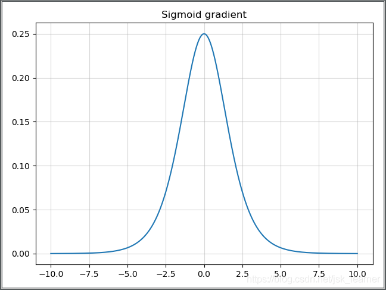
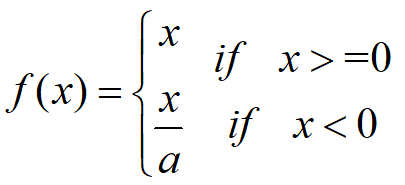

本文主要总结了深度学习中出现的各种激活函数，从公式，函数曲线和导数函数曲线等角度进行了总结。
激活函数可分为 饱和激活函数 和 非饱和激活函数 两种。
饱和激活函数主要有 Sigmoid, tanh 等，饱和激活函数主要有 ReLU, Leaky ReLU, SELU, Swish, Mish, Maxout 等。
饱和激活函数
Sigmoid 函数

Sigmoid 函数的三个主要缺陷：
-
梯度消失：注意：Sigmoid 函数趋近 0 和 1 的时候变化率会变得平坦，也就是说，Sigmoid 的梯度趋近于 0。神经网络使用 Sigmoid 激活函数进行反向传播时，输出接近 0 或 1 的神经元其梯度趋近于 0。这些神经元叫作饱和神经元。因此，这些神经元的权重不会更新。此外，与此类神经元相连的神经元的权重也更新得很慢。该问题叫作梯度消失。因此，想象一下，如果一个大型神经网络包含 Sigmoid 神经元，而其中很多个都处于饱和状态，那么该网络无法执行反向传播。
-
不以零为中心：Sigmoid 输出不以零为中心的。
-
计算成本高昂：exp() 函数与其他非线性激活函数相比，计算成本高昂。
下一个要讨论的非线性激活函数解决了 Sigmoid 函数中值域期望不为 0 的问题。
Tanh 函数

Tanh 激活函数又叫作双曲正切激活函数（hyperbolic tangent activation function）。与 Sigmoid 函数类似，Tanh 函数也使用真值，但 Tanh 函数将其压缩至 -1 到 1 的区间内。与 Sigmoid 不同，Tanh 函数的输出以零为中心，因为区间在 -1 到 1 之间。可以把 tanh 函数看做是 sigmoid 向下平移和拉伸后的结果。 在实践中，Tanh 函数的使用优先性高于 Sigmoid 函数。负数输入被当作负值，零输入值的映射接近零，正数输入被当作正值。
唯一的缺点是：
- Tanh 函数也会有梯度消失的问题，因此在饱和时也会「杀死」梯度。
Hard-Sigmoid 函数

Hard-Sigmoid 函数是 Sigmoid 激活函数的分段线性近似。从公式和曲线上来看，其更易计算，因此会提高训练的效率，不过同时会导致一个问题：就是首次派生值为零可能会导致神经元 died 或者过慢的学习率。
非饱和激活函数
ReLU （修正线性单元）


该激活函数使网络更快速地收敛。它不会饱和，即它可以对抗梯度消失问题，至少在正区域（x>0 时）可以这样，因此神经元至少在一半区域中不会把所有零进行反向传播。由于使用了简单的阈值化（thresholding），ReLU 计算效率很高。但是 ReLU 神经元也存在一些缺点：
- 不以零为中心：和 Sigmoid 激活函数类似，ReLU 函数的输出不以零为中心。
- 前向传导（forward pass）过程中，如果
x < 0，则神经元保持非激活状态，且在后向传导（backward pass）中「杀死」梯度。这样权重无法得到更新，网络无法学习。当x = 0时，该点的梯度未定义，但是这个问题在实现中得到了解决，通过采用左侧或右侧的梯度的方式。
ReLU6（抑制其最大值）

主要是为了在移动端 float16 的低精度的时候，也能有很好的数值分辨率，如果对 ReLu 的输出值不加限制，那么输出范围就是 0 到正无穷，而低精度的 float16 无法精确描述其数值，带来精度损失。
ELU (指数线性单元 exponential linear units)
其将激活函数的平均值接近零，从而加快学习的速度。同时，还可以通过正值的标识来避免梯度消失的问题。根据一些研究，ELU 的分类 精确度要高于 Relu。
-
融合了 Sigmoid 和 ReLU，左侧具有软饱和性，右侧无饱和性。
-
右侧线性部分使得 ELU 能够缓解梯度消失，而左侧软饱能够让 ELU 对输入变化或噪声更鲁棒。
-
ELU 的输出均值接近于零，所以收敛速度更快。
-
在 ImageNet 上，不加 Batch Normalization 30 层以上的 ReLU, 网络会无法收敛，PReLU 网络在 MSRA 的 Fan-in（caffe）初始化下会发散，而 ELU 网络在 Fan-in/Fan-out 下都能收敛。
SELU (缩放指数线性单元 scaled exponential linear units)
就是给 ELU 乘上一个系数，该系数大于 1。
在这篇 paper Self-Normalizing Neural Networks 中，作者提到，SELU 可以使得输入在经过一定层数之后变为固定的分布。
以前的 ReLU、P-ReLU、ELU 等激活函数都是在负半轴坡度平缓，这样在激活的方差过大时可以让梯度减小，防止了梯度爆炸，但是在正半轴其梯度简单地设置为了 1。而 SELU 的正半轴大于 1，在方差过小的时候可以让它增大，但是同时防止了梯度消失。这样激活函数就有了一个不动点，网络深了之后每一层的输出都是均值为 0，方差为 1.
其中超参 和 的值是 证明得到 的（而非训练学习得到）

Leaky-ReLU
Leaky ReLU 和 ReLU 不同的是，ReLU 是将所有的负值设为零，而 Leaky ReLU 是给所有负值赋予一个非零斜率，即用一个负值部分除以大于 1 的数。(公式中 a 是大于 1 的一个常数)

P-ReLU（参数化修正线性单元）
可以看作是 Leaky ReLU 的一个变体，不同的是，P-ReLU 中的负值部分的斜率是根据数据来定的，即 a 的值并不是一个常数。
注意区分 PReLU 和 LeakyReLU，PReLU 的 是一个可学习的数组，尺寸与 相同。
PReLU 是针对 ReLU 的一个改进型，在负数区域内，PReLU 有一个很小的斜率，这样也可以避免 ReLU 死掉的问题。相比于 ELU，PReLU 在负数区域内是线性运算，斜率虽然小，但是不会趋于0，这算是一定的优势。
R-ReLU (（随机纠正线性单元)
R-ReLU 也是 Leaky ReLU 的一个变体，只不过在这里负值部分的斜率在训练的时候是随机的，即在一个范围内随机抽取 a 的值，不过这个值在测试环节会固定下来。
Swish
paper : Searching for Activation Functions
beta是个常数或者可以训练的参数。其具有无上界有下界、平滑、非单调的特性。其在模型效果上优于 ReLU。
由于训练会受多种因素的影响，我们很难证明为什么一个激活函数会优于另一个。但是我们认为 Swish 无上界有下界、非单调且平滑的特性都是优势。
Hard-Swish
在论文 Searching for MobileNet V3 中，作者提到，虽然这种 Swish 非线性提高了精度，但是在嵌入式环境中，他的成本是非零的，因为在移动设备上计算 sigmoid 函数代价要大得多。
因此作者使用 hard-Swish 和 hard-Sigmoid 替换了 ReLU6 和 SE-block 中的 Sigmoid 层，但是只是在网络的后半段才将 ReLU6 替换为 h-Swish，因为作者发现 Swish 函数只有在更深的网络层使用才能体现其优势。
首先是肯定了 Swish 的重要性，然后指出在量化模式下，Sigmoid 函数比 ReLU6 的计算代价大的多，所以才有了这个 ReLU6 版本的 h-Swish。
Mish

为什么 Mish 表现的更好：
无边界(即正值可以达到任何高度)避免了由于封顶而导致的饱和。理论上对负值的轻微允许允许更好的梯度流，而不是像 ReLU 中那样的硬零边界。
平滑的激活函数允许更好的信息深入神经网络，从而得到更好的准确性和泛化。
Mish 函数在曲线上几乎所有点上的平滑度
Maxout
与常规的激活函数不同，Maxout 是一个可以学习的分段线性函数。
其可以看做是在深度学习网络中加入了一层激活函数层，包含一个参数 k，这一层相比 ReLU，Sigmoid 等，其在于增加了 k 个神经元，然后输出激活值最大的值。
其需要学习的参数就是 k 个神经元中的权值和偏置，这就相当于常规的激活函数一层，而 Maxout 是两层，而且参数个数增加了 k 倍。
其可以有效的原理是，任何 ReLU 及其变体等激活函数都可以看成分段的线性函数，而 Maxout 加入的一层神经元正是一个可以学习参数的分段线性函数。
优点：
其拟合能力很强，理论上可以拟合任意的凸函数；
具有 ReLU 的所有优点，线性和非饱和性；
同时没有 ReLU 的一些缺点，如神经元的死亡；
缺点：
导致整体参数的激增。
对上图做个说明，第
i层有3个节点，红点表示，而第i+1层有4个结点，用彩色点表示，此时在第i+1层采用 maxout（k=3）。我们看到第i+1层的每个节点的激活值都有3个值，3次计算的最大值才是对应点的最终激活值。我举这个例子主要是为了说明，决定结点的激活值的时候并不是以层为单位，仍然以节点为单位。
Softplus
softplus可以看作是 ReLU 的平滑。根据神经科学家的相关研究，softplus 和 ReLU 与脑神经元激活频率函数有神似的地方。也就是说，相比于早期的激活函数，softplus 和 ReLU 更加接近脑神经元的激活模型，而神经网络正是基于脑神经科学发展而来，这两个激活函数的应用促成了神经网络研究的新浪潮。
参考文章
深度学习—激活函数详解（Sigmoid、tanh、ReLU、ReLU6及变体P-R-Leaky、ELU、SELU、Swish、Mish、Maxout、hard-sigmoid、hard-swish）
一文概览深度学习中的激活函数
深度学习中常用的激活函数详解
深度学习笔记–激活函数：sigmoid，maxout